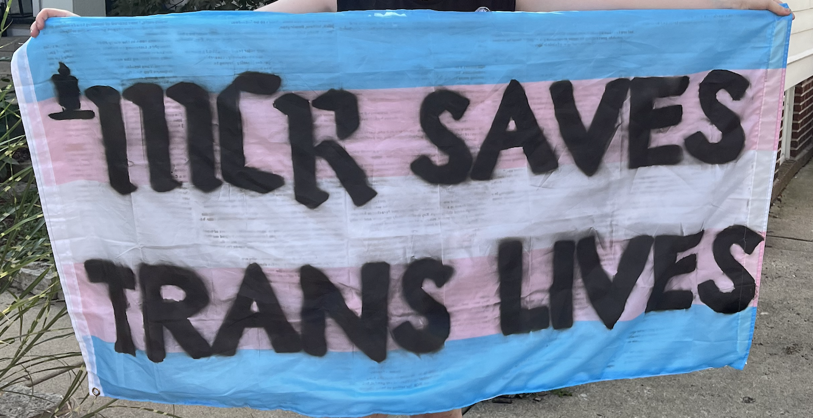

stories
[SUBTITLE HERE] click on the flags below to learn more ⬇️

NOTES:

this but with the flags - hover over them to reveal the backs
each image is a link to a separate page with all of the stories from that flag
after extensive, EXTENSIVE research, i think it's going to be easiest to just paste new stories directly into the html file as they come in. the other option is making it another embedded tumblr blog like the "blog" page. hovering over the story and seeing the photo pop up is cool but more complicated to update as new ones come in